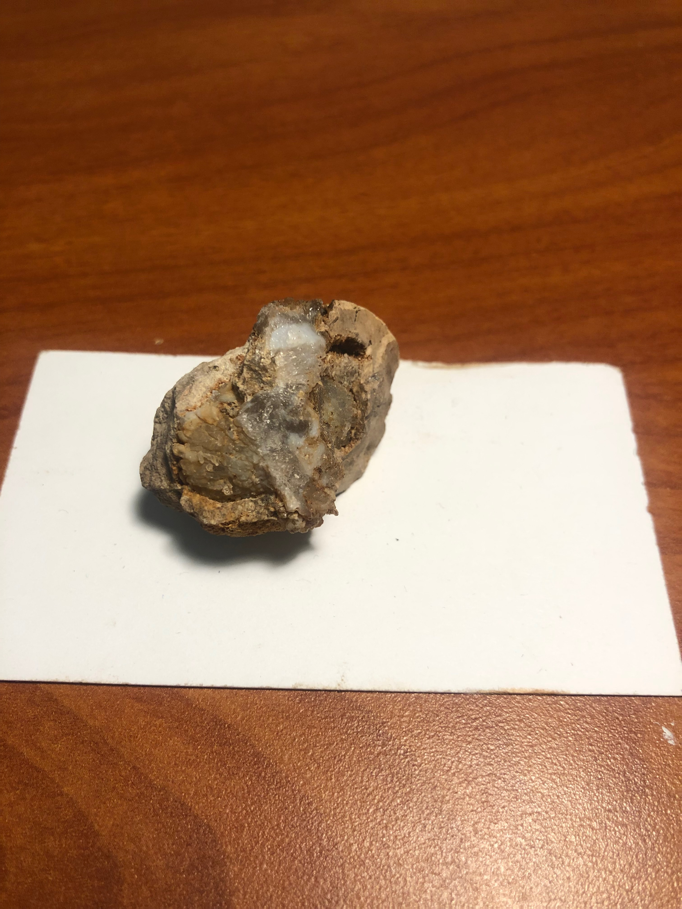
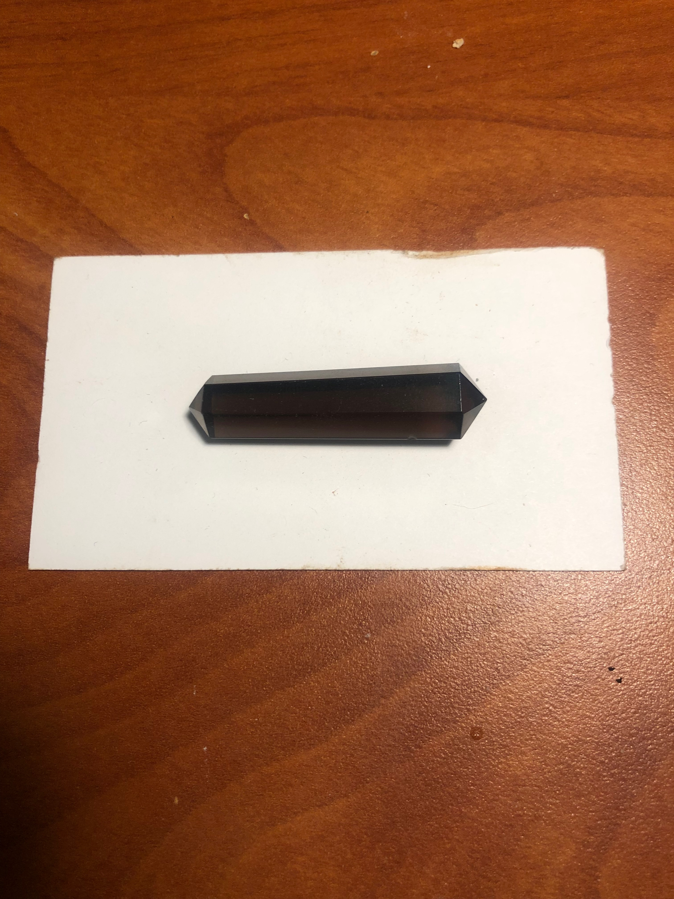

Rocks have been a curiosity of mine for as long as I can remember, and to be fair quite a few of them are after all very pretty. But even outright appearence aside I’ve been really interested in their foundation, the processes in the environment that cause such different crystals. And I think in a way that beginning interest in asking why and how something forms and its make up is what lead me to my interets on Chemistry (more on that later).
My plan in this page is both to share pictures of the rocks I have collected because they’re pretty :3
But also to share bits I have learned about them whether in their make up or in the capacities for energy and healing.
also just a note for the properties of the stones I list, please understand sources differ on crystal properties so I easily could be wrong
Also here is a link for a tumbled rock identifier
Here are some pictures from my rock collecton
Tumbled Green Adventurine - helps to comfort and heal - as well as promote good luck
Collection of Amethyst Amethyst helps relieve stress, can dispel anger, rage, fear and anxiety
Stone Arrowheads I have been gifted
I can’t remember this stone’s name but I love the color. Possibly Blue Calcite
I don’t know this one either … makes me crazy
Here’s a bunch of different pieces of calcite - can also absorb and transform negative energy
Pieces of Citrine - a crystal often used for healing and happiness and positivity
Different forms of Clear Quartz- the more crystaline structures are good for renstating balance, stimulating immune system and amplifying energy
Piece of rough emerald - Emeralds can help heal both emotional love and the physical heart
Rough unpolished garnet- Garnets are good for re-energizing and purifying helping to re-establish balance

Pieces of Geode I cracked open myself :3
Here is a really pretty piece of what I think is Hemimorphite which is good for empathy, promoting compassion in all interactions
Piece of Tumbled Polished Jasper - provides protection and absorbs negative energy
Cut Piece of Labradorite- promote growth to our mental, emotional, spiritual, and physical healing
Small piece of a Meteorite!
Tumbled and Polished Onyx - Imparts self-confidence, helping be at ease within surroundings
Tiny shard of firey Opal- helps to renew and bring balance as well as inspire creativity

Pieces of petrified wood
Unknown pink stone
Really cool red stone no idea what it is but I love it :3
Little rock rhino cause they’re my favorite
Collection of Rose Quartz - crystal on unconditional love, helps with both romantic and self love. For a little while I would carry a piece of this with me everywhere
Serpentine-assists the retrieval of wisdom

Smoky Quartz - improving overall wellbeing, the release of unwanted emotional baggage, surrendering old wounds, stability and grounding
Polished Tiger Eye - focus the mind, promoting mental clarity, assisting us to resolve problems
Unakite - used to support convalescence from illness